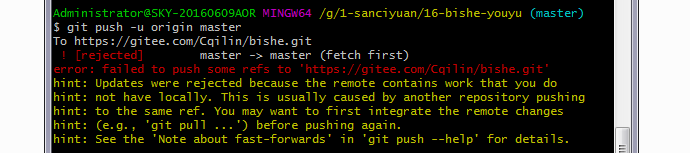
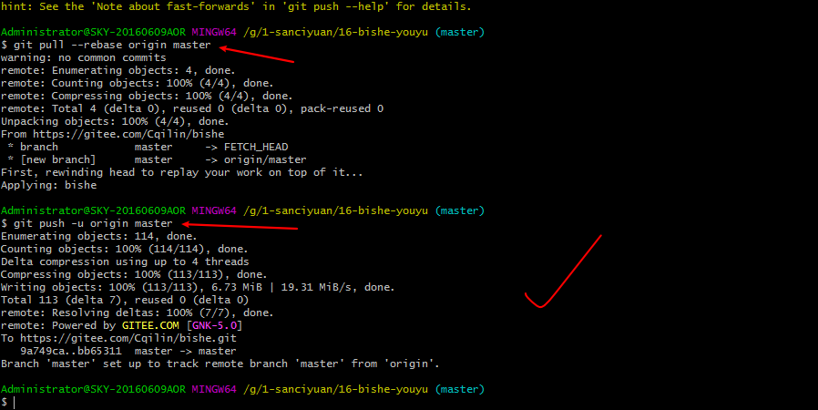
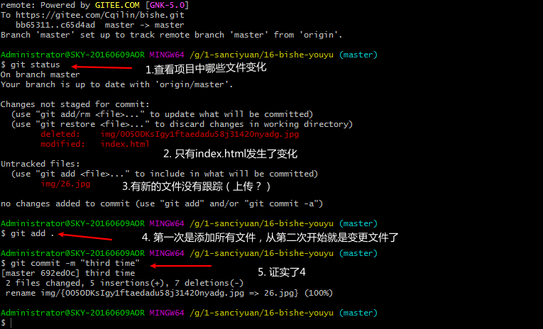
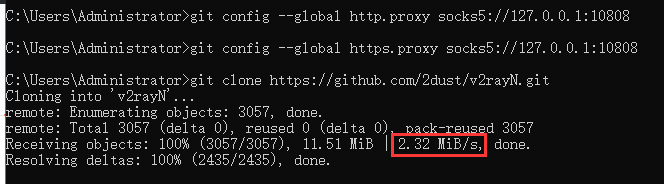
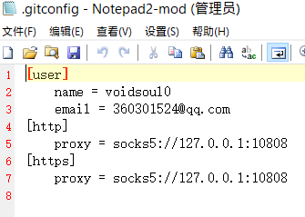

1. git上传项目到码云(gitee)
码云官方：https://gitee.com/help/articles/4114
使用成功：https://www.jianshu.com/p/287ab9f46035
如果本地仓库出错，可以马上再另外创建文件夹，再建一个即可；
这不是hexo+next，随便新建，目前；2020-8-10 15:21:50
1.建立本地git仓库
1 | cd 到你的本地项目根目录下，执行git命令``git init |
2.第二步：将本地项目工作区的所有文件添加到暂存区
1 | git add . // . 表示所有文件, 如果想添加项目中的指定文件，那就把 . 改为指定文件名即可 |
3.第三步：将暂存区的文件提交到本地仓库
1 | git commit -m "" //冒号里面写注释语句 eg:git commit -m "init project" |
- 参数
-m后为当次提交的备注信息 git status -s可以查看提交成功没有，（A：提交成功；AM：文件在添加到缓存之后又有改动）- 好像这里必须要双引号，别把js里面单双引号一个意思拿到其他地方用；2020-10-6 17:31:22
4.将本地仓库关联到码云上
1 | git remote add origin https://gitee.com/tyb321/leopard.git //后面的URL地址就是我在第四步最后图片时复制的那个https地址 |
- 这不是我的地址，只是复制别人的的笔记
在这一步时如果出现错误：fatal:remote origin already exists 意思是路径存在了，就需要删除原来的路径从新添加
1 | 那就先输入 git remote rm origin |
5.最后一步，将代码由本地仓库上传到Github远程仓库
git push -u origin master
如果没有第四步关联，这样也行，出至：gitee官网
git push https://gitee.com/***/test.git
5.1 理解一下代码的单词；
- push
英 [pʊʃ] 美 [pʊʃ]
v.推动(人或物);移动(身体部位);推进(道路);挤开;推动;促使(达到某程度或状态)
n.推;搡;进攻;攻势;挺进;矢志的追求;坚定的努力 - -u 可能是 you？
- origin
英 [ˈɒrɪdʒɪn] 美 [ˈɔːrɪdʒɪn]
n.起源;源头;起因;身世;出身
5.2 报错：
1.如果报failed to push some refs to git 错误出现错误的主要原因是码云中的README.md文件不在本地代码目录

2.可以通过如下命令进行代码合并【注：pull=fetch+merge]
1 | git pull --rebase origin master |
2.1 执行上面代码后可以看到本地代码库中多了README.md文件
3.此时再执行语句 git push -u origin master即可完成代码上传到github
4.信息来源：https://www.cnblogs.com/uudon/p/12618043.html
5.成功；2020-10-6 18:19:02

1.2 第二次上传
1.除了第一次，要初始化；后面都不需要初始化；
2.然后是关联仓库不需要了，上面的第4步可以不用了。
来源：链接
3.输入git status 查看项目中哪些文件发生了变化，可以当做验证使用
- 这个最好是开始就用；
4.顺序可以是：
1.输入git status 查看项目中哪些文件发生了变化
2.git add . 将所有变更文件添加进来（没变更应该也会吧）
3.
git commit -m ""，将暂存区的文件提交到本地仓库3.1 实际操作中看了看，确实只有变更的东西提交到了本地仓库
3.2 说明上面2，确实；2020-10-6 18:53:20
3.3 示例：

4.
git push -u origin master，将代码由本地仓库上传到远程仓库好像也可以简写：
git push，没试验
2. 安装git
https://www.cnblogs.com/xueweisuoyong/p/11914045.html
在第9步后面，多了一个：
Choose the default behavior of ‘git pull’
随后还多了一个管理证书的；

我选的中间的；
Git Credential Managert
Git凭据Managert
The Git Credential Manager for Windows handles credentials e.g. for AzureDevOps and GitHub (requires .NET framework v4.5.1 or later).
Windows的Git凭据管理器处理AzureDevOps和GitHub的凭据(需要. net framework v4.5.1或更高版本)。
第三个选项是：
Git Credential Manager Core
Git Credential管理器核心
(NEW!)Use the new, cross-platform version of the Git Credential Manager.
(新!)使用新的、跨平台版本的Git凭据管理器。
See more information about the future of Git Credential Manager here.
有关Git Credential Manager未来的更多信息，请点击这里。
后面的大同小异；
在安装后的界面（也是最后一个界面）勾选View Release Notes 会给一个说明html；不过是本地的；
file:///C:/Program%20Files/Git/ReleaseNotes.html
这里有2.27版本的安装：
https://blog.csdn.net/qq_19394437/article/details/107250235
3. git remote -v
1.查看当前仓库对应的远程仓库地址
2.这条命令能显示你当前仓库中已经添加了的仓库名和对应的仓库地址，通常来讲，会有两条一模一样的记录，分别是fetch和push，其中fetch是用来从远程同步 push是用来推送到远程
3.出至：
4.实验：

4. git clone
1.git clone https://github.com/××× 从远程库中克隆,克隆一个版本库到新的目录，可以在当前目录新建一个文件夹，也可以git clone [地址] [本地目录]
2.git clone ssh://igerrit.storm:29418/tools/repo.git // 同上，
3.之后 git pull origin master //origin是远程主机，master是默认分支
4.要克隆一个仓库，首先必须知道仓库的地址，然后使用git clone命令克隆。
5.Git支持多种协议，包括https，但通过ssh支持的原生git协议速度最快
6.单一仓库的更新可以使用git pull命令。
5. git挂代理
5.1 代码

5.2 gitconfig文件
1.这个文件在：C:\Documents and Settings\Administrator
2.Documents and Settings文件夹不一定有权限，需要改；
- 权限笔记：文章21-3
3.组队的例子：

- 现在有点困，睡觉了，下次再来解析；2020-9-14 03:54:39
6. git常用命令
切换分支：git checkout name
撤销修改：git checkout – file
删除文件：git rm file
查看状态：git status
添加记录：git add file 或 git add .
添加描述：git commit -m “miao shu nei rong”
同步数据：git pull
提交数据：git push origin name
分支操作
查看分支：git branch
创建分支：git branch name
切换分支：git checkout name
创建+切换分支：git checkout -b name
合并某分支到当前分支：git merge name
删除分支：git branch -d name
删除远程分支：git push origin :name